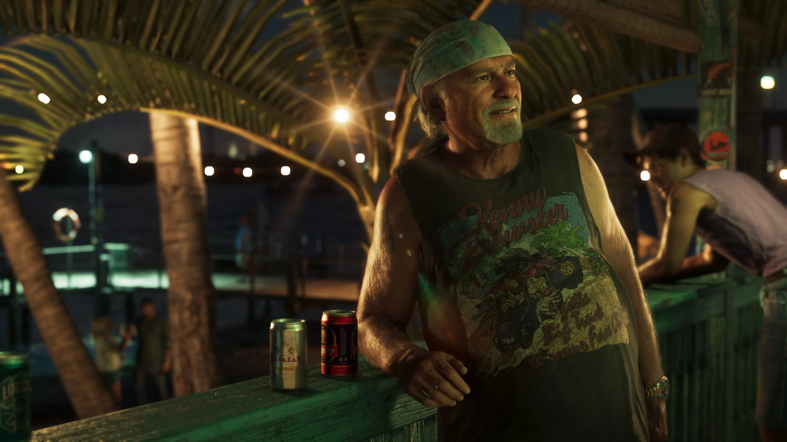
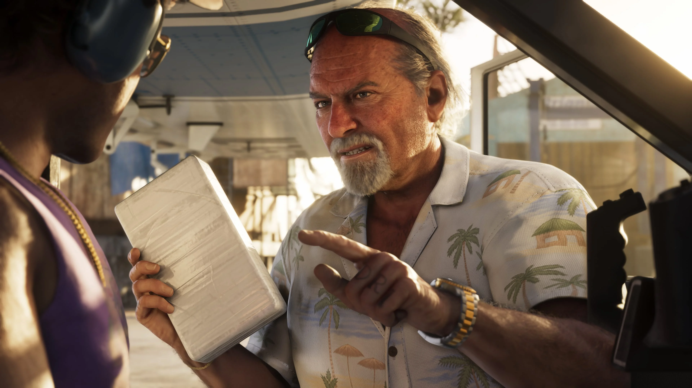

Jason Duval
Jason vive sem pagar aluguel em uma propriedade de Brian, desde que o ajude com cobranças e intimidações locais.
Conhecer Jason
Brian Heder é um traficante da velha guarda das Leonida Keys em Grand Theft Auto VI, ligado à época de ouro do contrabando na região.
Ele continua movimentando produto por seu estaleiro ao lado de Lori, sua terceira esposa, e já está nesse mundo há tempo suficiente para deixar boa parte do trabalho sujo para os outros.
Brian é apresentado pela Rockstar como um traficante clássico da época de ouro do contrabando nas Keys.
Ele continua ativo, movimentando produto por seu estaleiro, mas a experiência acumulada ao longo dos anos permite que outras pessoas assumam parte do trabalho mais pesado.
Lori, sua terceira esposa, também aparece diretamente ligada a essa fase atual da vida de Brian.
Entre as pessoas de seu círculo está Jason Duval, que mora sem pagar aluguel em uma das propriedades de Brian em troca de ajudá-lo com cobranças e intimidações locais.

A trajetória de Brian está diretamente ligada às Leonida Keys. É nessa região que a Rockstar situa seu passado no contrabando e sua atividade atual.
O estaleiro continua sendo parte de seus negócios: Brian ainda movimenta produto por meio do local, mesmo depois de muitos anos nesse mercado.
O perfil oficial também sugere que ele já não precisa executar pessoalmente tudo o que fazia antes. A experiência lhe permite colocar outras pessoas para cuidar de parte do trabalho sujo.
Brian possui ligação direta com Jason Duval e Cal Hampton.
Jason vive sem pagar aluguel em uma das propriedades de Brian. Em troca, ajuda com cobranças e intimidações locais quando necessário.
Cal Hampton é amigo de Jason e também é apresentado oficialmente como outro associado de Brian.
Essas relações estabelecem um pequeno círculo em torno de Jason, embora os materiais divulgados até agora ainda não detalhem tudo o que Brian e Cal representarão para a história completa do jogo.

A apresentação oficial de Brian também revela um detalhe de sua vida pessoal: Lori é sua terceira esposa.
Ela aparece diretamente associada à atividade atual de Brian, já que a Rockstar afirma que ele continua movimentando produto por seu estaleiro com Lori.
Lori também é mencionada quando a Rockstar descreve o acordo entre Brian e Jason: além de ajudar com trabalhos locais, Jason aparece de vez em quando para tomar a sangria dela.
Por enquanto, não há uma ficha individual oficial de Lori com informações mais detalhadas sobre sua participação na história.
Relações mencionadas diretamente nos materiais oficiais de Grand Theft Auto VI.
Jason vive sem pagar aluguel em uma propriedade de Brian, desde que o ajude com cobranças e intimidações locais.
Conhecer JasonCal é amigo de Jason e também é identificado oficialmente como outro associado de Brian Heder.
Conhecer CalLori é a terceira esposa de Brian e aparece diretamente ligada à sua atividade atual no estaleiro.
Os quatro screenshots oficiais de Brian Heder publicados na biblioteca de mídia da Rockstar Games.
Esta área reúne somente informações apresentadas oficialmente para o personagem.
Brian é apresentado como um traficante clássico da época de ouro do contrabando nas Keys.
Ele continua movimentando produto por meio de seu estaleiro.
Lori é a terceira esposa de Brian e está com ele em sua atividade atual no estaleiro.
Jason vive sem pagar aluguel em uma das propriedades de Brian em troca de ajudar com trabalhos locais.
Cal é apresentado oficialmente como outro associado de Brian.
Brian está nesse mundo há tempo suficiente para deixar outras pessoas cuidarem de parte do trabalho sujo.
As informações e imagens desta página são baseadas em materiais oficiais publicados pela Rockstar Games.
Página oficial que apresenta Brian Heder, seu passado no contrabando, Lori, o estaleiro e sua relação com Jason Duval.
Ver perfil oficialBiblioteca oficial de mídia da Rockstar Games, com quatro screenshots identificados como Brian Heder.
Ver screenshots oficiais